The image of American politician and scientist Benjamin Franklin (1706–1790) flying a kite in a thunderstorm is familiar to every schoolchild. (Figure In this experiment, Franklin demonstrated a connection between lightning andstatic electricity. Sparks were drawn from a key hung on a kite string during an electrical storm. These sparks were like those produced by static electricity, such as the spark that jumps from your finger to a metal doorknob after you walk across a wool carpet. What Franklin demonstrated in his dangerous experiment was a connection between phenomena on two different scales: one the grand power of an electrical storm, the other an effect of more human proportions. Connections like this one reveal the underlying unity of the laws of nature, an aspect we humans find particularly appealing.
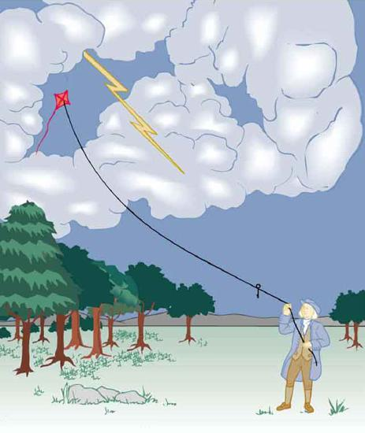
Much has been written about Franklin. His experiments were only part of the life of a man who was a scientist, inventor, revolutionary, statesman, and writer. Franklin’s experiments were not performed in isolation, nor were they the only ones to reveal connections.
For example, the Italian scientist Luigi Galvani (1737–1798) performed a series of experiments in which static electricity was used to stimulate contractions of leg muscles of dead frogs, an effect already known in humans subjected to static discharges. But Galvani also found that if he joined two metal wires (say copper and zinc) end to end and touched the other ends to muscles, he produced the same effect in frogs as static discharge. Alessandro Volta (1745–1827), partly inspired by Galvani’s work, experimented with various combinations of metals and developed the battery.
During the same era, other scientists made progress in discovering fundamental connections. The periodic table was developed as the systematic properties of the elements were discovered. This influenced the development and refinement of the concept of atoms as the basis of matter. Such submicroscopic descriptions of matter also help explain a great deal more.
Atomic and molecular interactions, such as the forces of friction, cohesion, and adhesion, are now known to be manifestations of theelectromagnetic force. Static electricity is just one aspect of the electromagnetic force, which also includes moving electricity and magnetism.
All the macroscopic forces that we experience directly, such as the sensations of touch and the tension in a rope, are due to the electromagnetic force, one of the four fundamental forces in nature. The gravitational force, another fundamental force, is actually sensed through the electromagnetic interaction of molecules, such as between those in our feet and those on the top of a bathroom scale. (The other two fundamental forces, the strong nuclear force and the weak nuclear force, cannot be sensed on the human scale.)
This chapter begins the study of electromagnetic phenomena at a fundamental level. The next several chapters will cover static electricity, moving electricity, and magnetism—collectively known as electromagnetism. In this chapter, we begin with the study of electric phenomena due to charges that are at least temporarily stationary, called electrostatics, or static electricity.
📖 OpenStax College Physics, Section 18.0. openstax.org · CC BY 4.0
- Define electric charge, and describe how the two types of charge interact.
- Describe three common situations that generate static electricity.
- State the law of conservation of charge.
What makes plastic wrap cling? Static electricity. Not only are applications of static electricity common these days, its existence has been known since ancient times. The first record of its effects dates to ancient Greeks who noted more than 500 years B.C. that polishing amber temporarily enabled it to attract bits of straw (Figure . The very wordelectricderives from the Greek word for amber (electron).
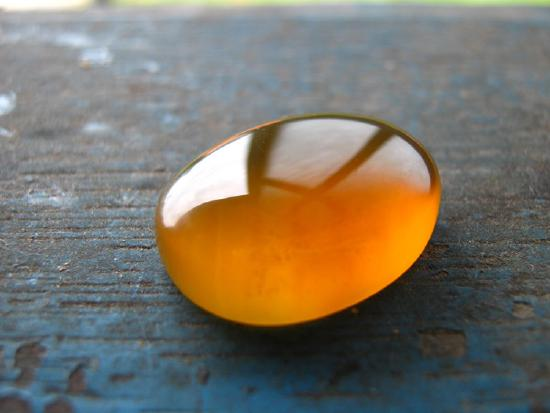
Many of the characteristics of static electricity can be explored by rubbing things together. Rubbing creates the spark you get from walking across a wool carpet, for example. Static cling generated in a clothes dryer and the attraction of straw to recently polished amber also result from rubbing. Similarly, lightning results from air movements under certain weather conditions. You can also rub a balloon on your hair, and the static electricity created can then make the balloon cling to a wall. We also have to be cautious of static electricity, especially in dry climates. When we pump gasoline, we are warned to discharge ourselves (after sliding across the seat) on a metal surface before grabbing the gas nozzle. Attendants in hospital operating rooms must wear booties with a conductive strip of aluminum foil on the bottoms to avoid creating sparks which may ignite flammable anesthesia gases combined with the oxygen being used.
Some of the most basic characteristics of static electricity include:
How do we know there are two types ofelectric charge? When various materials are rubbed together in controlled ways, certain combinations of materials always produce one type of charge on one material and the opposite type on the other. By convention, we call one type of charge “positive”, and the other type “negative.” For example, when glass is rubbed with silk, the glass becomes positively charged and the silk negatively charged. Since the glass and silk have opposite charges, they attract one another like clothes that have rubbed together in a dryer. Two glass rods rubbed with silk in this manner will repel one another, since each rod has positive charge on it. Similarly, two silk cloths so rubbed will repel, since both cloths have negative charge. Figure shows how these simple materials can be used to explore the nature of the force between charges.
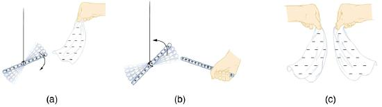
More sophisticated questions arise. Where do these charges come from? Can you create or destroy charge? Is there a smallest unit of charge? Exactly how does the force depend on the amount of charge and the distance between charges? Such questions obviously occurred to Benjamin Franklin and other early researchers, and they interest us even today.
Franklin wrote in his letters and books that he could see the effects of electric charge but did not understand what caused the phenomenon. Today we have the advantage of knowing that normal matter is made of atoms, and that atoms contain positive and negative charges, usually in equal amounts.
Figure shows a simple model of an atom with negativeelectronsorbiting its positive nucleus. The nucleus is positive due to the presence of positively chargedprotons. Nearly all charge in nature is due to electrons and protons, which are two of the three building blocks of most matter. (The third is the neutron, which is neutral, carrying no charge.) Other charge-carrying particles are observed in cosmic rays and nuclear decay, and are created in particle accelerators. All but the electron and proton survive only a short time and are quite rare by comparison.
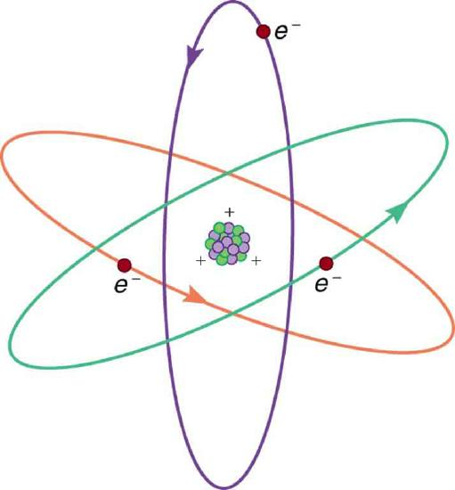
The charges of electrons and protons are identical in magnitude but opposite in sign. Furthermore, all charged objects in nature are integral multiples of this basic quantity of charge, meaning that all charges are made of combinations of a basic unit of charge. Usually, charges are formed by combinations of electrons and protons. The magnitude of this basic charge is
The symbol \(q\) is commonly used for charge and the subscript\(e\)indicates the charge of a single electron (or proton).
The SI unit of charge is the coulomb (C). The number of protons needed to make a charge of 1.00 C is
Similarly, \(6.25\times 10^{18}\) electrons have a combined charge of −1.00 coulomb. Just as there is a smallest bit of an element (an atom), there is a smallest bit of charge. There is no directly observed charge smaller than \(∣q_e∣\) (see ThingsGreatand Small: The Submicroscopic Origin of Charge), and all observed charges are integral multiples of \(∣q_e∣\).
THINGS GREAT AND SMALL: THE SUBMICROSCOPIC ORIGIN OF CHARGE
With the exception of exotic, short-lived particles, all charge in nature is carried by electrons and protons. Electrons carry the charge we have named negative. Protons carry an equal-magnitude charge that we call positive. (Figure Electron and proton charges are considered fundamental building blocks, since all other charges are integral multiples of those carried by electrons and protons. Electrons and protons are also two of the three fundamental building blocks of ordinary matter. The neutron is the third and has zero total charge.
Figure shows a person touching a Van de Graaff generator and receiving excess positive charge. The expanded view of a hair shows the existence of both types of charges but an excess of positive. The repulsion of these positive like charges causes the strands of hair to repel other strands of hair and to stand up. The further blowup shows an artist’s conception of an electron and a proton perhaps found in an atom in a strand of hair.
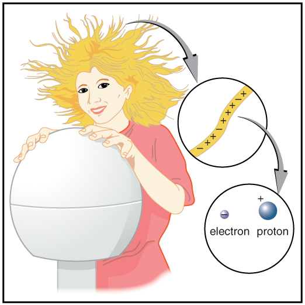
The electron seems to have no substructure; in contrast, when the substructure of protons is explored by scattering extremely energetic electrons from them, it appears that there are point-like particles inside the proton. These sub-particles, named quarks, have never been directly observed, but they are believed to carry fractional charges as seen in Figure . Charges on electrons and protons and all other directly observable particles are unitary, but these quark substructures carry charges of either \(-\dfrac{1}{3}\) or \(+\dfrac{2}{3}\). There are continuing attempts to observe fractional charge directly and to learn of the properties of quarks, which are perhaps the ultimate substructure of matter.
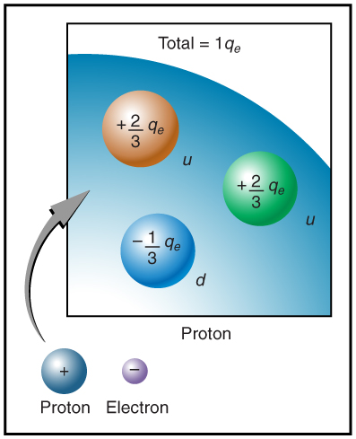
Charges in atoms and molecules can be separated—for example, by rubbing materials together. Some atoms and molecules have a greater affinity for electrons than others and will become negatively charged by close contact in rubbing, leaving the other material positively charged. (Figure Positive charge can similarly be induced by rubbing. Methods other than rubbing can also separate charges. Batteries, for example, use combinations of substances that interact in such a way as to separate charges. Chemical interactions may transfer negative charge from one substance to the other, making one battery terminal negative and leaving the first one positive.
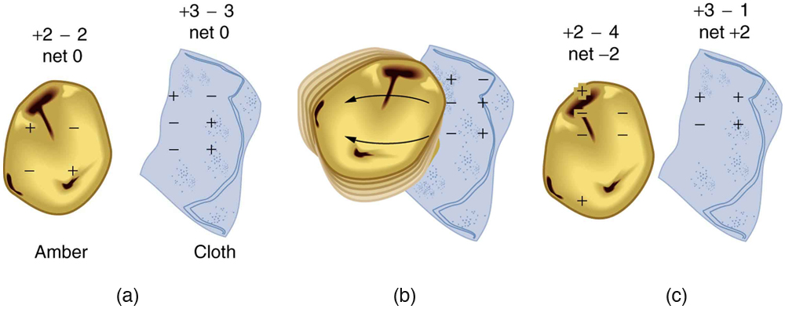
No charge is actually created or destroyed when charges are separated as we have been discussing. Rather, existing charges are moved about. In fact, in all situations the total amount of charge is always constant. This universally obeyed law of nature is called thelaw of conservation of charge.
LAW OF CONSERVATION OF CHARGE
Total charge is constant in any process.
In more exotic situations, such as in particle accelerators, mass, \(\Delta m\), can be created from energy in the amount \(\Delta m=\dfrac{E}{c^{2}}\). Sometimes, the created mass is charged, such as when an electron is created. Whenever a charged particle is created, another having an opposite charge is always created along with it, so that the total charge created is zero. Usually, the two particles are “matter-antimatter” counterparts. For example, an antielectron would usually be created at the same time as an electron. The antielectron has a positive charge (it is called a positron), and so the total charge created is zero. (Figure All particles have antimatter counterparts with opposite signs. When matter and antimatter counterparts are brought together, they completely annihilate one another. By annihilate, we mean that the mass of the two particles is converted to energyE, again obeying the relationship \(\Delta m=\dfrac{E}{c^{2}}\). Since the two particles have equal and opposite charge, the total charge is zero before and after the annihilation; thus, total charge is conserved.
MAKING CONNECTIONS: CONSERVATION LAWS
Only a limited number of physical quantities are universally conserved. Charge is one—energy, momentum, and angular momentum are others. Because they are conserved, these physical quantities are used to explain more phenomena and form more connections than other, less basic quantities. We find that conserved quantities give us great insight into the rules followed by nature and hints to the organization of nature. Discoveries of conservation laws have led to further discoveries, such as the weak nuclear force and the quark substructure of protons and other particles.
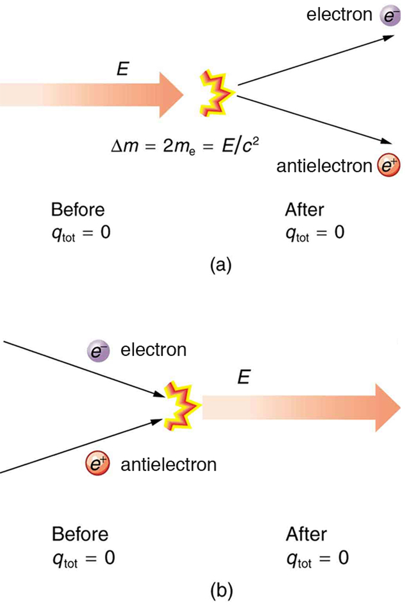
The law of conservation of charge is absolute—it has never been observed to be violated. Charge, then, is a special physical quantity, joining a very short list of other quantities in nature that are always conserved. Other conserved quantities include energy, momentum, and angular momentum.
PHET EXPLORATIONS: BALLOONS AND STATIC ELECTRICITY
Why does a balloon stick to your sweater? Rub a balloon on a sweater, then let go of the balloon and it flies over and sticks to the sweater. View the charges in the sweater, balloons, and the wall.
📖 OpenStax College Physics, Section 18.1. openstax.org · CC BY 4.0
- Define conductor and insulator, explain the difference, and give examples of each.
- Describe three methods for charging an object.
- Explain what happens to an electric force as you move farther from the source.
- Define polarization.
Some substances, such as metals and salty water, allow charges to move through them with relative ease. Some of the electrons in metals and similar conductors are not bound to individual atoms or sites in the material. Thesefree electronscan move through the material much as air moves through loose sand. Any substance that has free electrons and allows charge to move relatively freely through it is called aconductor. The moving electrons may collide with fixed atoms and molecules, losing some energy, but they can move in a conductor. Superconductors allow the movement of charge without any loss of energy. Salty water and other similar conducting materials contain free ions that can move through them. An ion is an atom or molecule having a positive or negative (nonzero) total charge. In other words, the total number of electrons is not equal to the total number of protons.
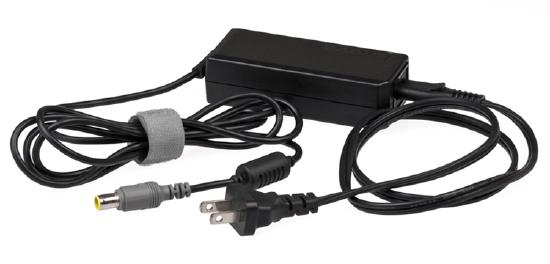
Other substances, such as glass, do not allow charges to move through them. These are calledinsulators. Electrons and ions in insulators are bound in the structure and cannot move easily—as much as \(10^{23}\) times more slowly than in conductors. Pure water and dry table salt are insulators, for example, whereas molten salt and salty water are conductors.
Figure shows an electroscope being charged by touching it with a positively charged glass rod. Because the glass rod is an insulator, it must actually touch the electroscope to transfer charge to or from it. (Note that the extra positive charges reside on the surface of the glass rod as a result of rubbing it with silk before starting the experiment.) Since only electrons move in metals, we see that they are attracted to the top of the electroscope. There, some are transferred to the positive rod by touch, leaving the electroscope with a net positive charge.
![In part a, an electroscope is shown. A glass rod with positive signs is close to the tip of the electroscope which has negative signs on it and the leaves have has plus signs on it. In part b, the glass rod with positive sign is in contact with the tip of electroscope having negative signs. The negative signs are shown moving to the rod by arrows pointing toward the rod. The surfaces of the leaves now have both positive and negative charge. In part c, the glass rod is absent. The tip and the leaves of the electroscope have both positive and negative signs on them.](images/ch18/fig18-11-in-part-a-an-electroscope-is-shown-a-gla.jpg)
Electrostatic repulsion in the leaves of the charged electroscope separates them. The electrostatic force has a horizontal component that results in the leaves moving apart as well as a vertical component that is balanced by the gravitational force. Similarly, the electroscope can be negatively charged by contact with a negatively charged object.
It is not necessary to transfer excess charge directly to an object in order to charge it.Figure shows a method of induction wherein a charge is created in a nearby object, without direct contact. Here we see two neutral metal spheres in contact with one another but insulated from the rest of the world. A positively charged rod is brought near one of them, attracting negative charge to that side, leaving the other sphere positively charged.
![In part a, a pair of neutral metal spheres are in contact. In part b, a rod with positive signs is close to one surface of the sphere and the negative signs are shown on this surface toward the rod and positive signs are shown on the outermost face of the other sphere. In part c, the rod and the spheres are not in contact. The outermost surface of one sphere has negative signs and the outermost surface of another sphere has positive signs. In part d, the glass rod is not shown. The inner surfaces of the metallic spheres have opposite charges. One sphere has negative signs and the other has positive signs facing each other.](images/ch18/fig18-12-in-part-a-a-pair-of-neutral-metal-sphere.jpg)
This is an example of induced polarization of neutral objects. Polarization is the separation of charges in an object that remains neutral. If the spheres are now separated (before the rod is pulled away), each sphere will have a net charge. Note that the object closest to the charged rod receives an opposite charge when charged by induction. Note also that no charge is removed from the charged rod, so that this process can be repeated without depleting the supply of excess charge.
![In part a, a rod with positive sign is brought near a neutral metal sphere. One surface toward the rod has negative signs and the other surface has positive signs. In part b, a rod with positive sign is close to one surface of the sphere having negative signs and the other surface has low number of positive signs and a wire is attached to that face which is connected to the ground. In part c, a rod with positive sign is close to one surface of the sphere having negative signs and the other surface has low number of positive signs. In part d, the positive rod is absent, and the sphere has negative signs on it.](images/ch18/fig18-13-in-part-a-a-rod-with-positive-sign-is-br.jpg)
Another method of charging by induction is shown in Figure . The neutral metal sphere is polarized when a charged rod is brought near it. The sphere is then grounded, meaning that a conducting wire is run from the sphere to the ground. Since the earth is large and most ground is a good conductor, it can supply or accept excess charge easily. In this case, electrons are attracted to the sphere through a wire called the ground wire, because it supplies a conducting path to the ground. The ground connection is broken before the charged rod is removed, leaving the sphere with an excess charge opposite to that of the rod. Again, an opposite charge is achieved when charging by induction and the charged rod loses none of its excess charge.
Neutral objects can be attracted to any charged object. The pieces of straw attracted to polished amber are neutral, for example. If you run a plastic comb through your hair, the charged comb can pick up neutral pieces of paper. Figure shows how the polarization of atoms and molecules in neutral objects results in their attraction to a charged object.
![Microscopic views of objects are shown. A positive rod with positive signs is close to an insulator. The negative ends of all the molecules of the insulator are aligned toward the rod and positive ends of all molecules shown as spheres are away from the rod. In part b, a negative rod with negative signs is close to an insulator. The positive ends of all the molecules of the insulator are aligned toward the rod and negative ends of all molecules shown as spheres are away from the rod. In part c, a rod with negative signs and insulator with the surface closer to the rod has positive signs. The other surface has negative signs.](images/ch18/fig18-14-microscopic-views-of-objects-are-shown-a.jpg)
When a charged rod is brought near a neutral substance, an insulator in this case, the distribution of charge in atoms and molecules is shifted slightly. Opposite charge is attracted nearer the external charged rod, while like charge is repelled. Since the electrostatic force decreases with distance, the repulsion of like charges is weaker than the attraction of unlike charges, and so there is a net attraction. Thus a positively charged glass rod attracts neutral pieces of paper, as will a negatively charged rubber rod. Some molecules, like water, are polar molecules. Polar molecules have a natural or inherent separation of charge, although they are neutral overall. Polar molecules are particularly affected by other charged objects and show greater polarization effects than molecules with naturally uniform charge distributions.
Check Your Understanding
Can you explain the attraction of water to the charged rod in the figure below?
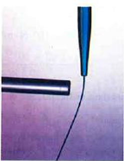
Water molecules are polarized, giving them slightly positive and slightly negative sides. This makes water even more susceptible to a charged rod’s attraction. As the water flows downward, due to the force of gravity, the charged conductor exerts a net attraction to the opposite charges in the stream of water, pulling it closer.
PHET EXPLORATIONS: JOHN TRAVOLTAGE
Make sparks fly with John Travoltage. Wiggle Johnnie's foot and he picks up charges from the carpet. Bring his hand close to the door knob and get rid of the excess charge.
📖 OpenStax College Physics, Section 18.2. openstax.org · CC BY 4.0
- State Coulomb’s law in terms of how the electrostatic force changes with the distance between two objects.
- Calculate the electrostatic force between two charged point forces, such as electrons or protons.
- Compare the electrostatic force to the gravitational attraction for a proton and an electron; for a human and the Earth.
Through the work of scientists in the late 18th century, the main features of theelectrostatic force—the existence of two types of charge, the observation that like charges repel, unlike charges attract, and the decrease of force with distance—were eventually refined, and expressed as a mathematical formula. The mathematical formula for the electrostatic force is calledCoulomb’s lawafter the French physicist Charles Coulomb (1736–1806), who performed experiments and first proposed a formula to calculate it.
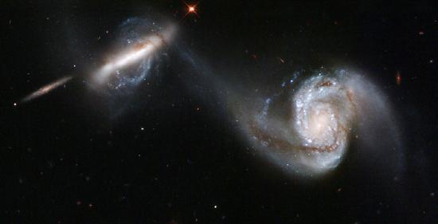
Definition: Coulomb’s Law
Coulomb’s law calculates the magnitude of the force \(F\) between two point charges, \(q_1\) and \(q_2\), separated by a distance \(r\).
In SI units, the constant\(k\) is equal to
The electrostatic force is a vector quantity and is expressed in units of newtons. The force is understood to be along the line joining the two charges. (Figure
Although the formula for Coulomb’s law is simple, it was no mean task to prove it. The experiments Coulomb did, with the primitive equipment then available, were difficult. Modern experiments have verified Coulomb’s law to great precision. For example, it has been shown that the force is inversely proportional to distance between two objects squared \((F\propto 1/r^{2})\) to an accuracy of 1 part in \(10^{16}\). No exceptions have ever been found, even at the small distances within the atom.
![In part a, two charges q one and q two are shown at a distance r. Force vector arrow F one two points toward left and acts on q one. Force vector arrow F two one points toward right and acts on q two. Both forces act in opposite directions and are represented by arrows of same length. In part b, two charges q one and q two are shown at a distance r. Force vector arrow F one two points toward right and acts on q one. Force vector arrow F two one points toward left and acts on q two. Both forces act toward each other and are represented by arrows of same length.](images/ch18/fig18-17-in-part-a-two-charges-q-one-and-q-two-ar.jpg)
Compare the electrostatic force between an electron and proton separated by \(0.530\times 10^{-10}m\) with the gravitational force between them. This distance is their average separation in a hydrogen atom.
To compare the two forces, we first compute the electrostatic force using Coulomb’s law, \(F=k\dfrac {|q_{1}q_{2}}{r^{2}}\). We then calculate the gravitational force using Newton’s universal law of gravitation. Finally, we take a ratio to see how the forces compare in magnitude.
Entering the given and known information about the charges and separation of the electron and proton into the expression of Coulomb’s law yields
Thus the Coulomb force is
The charges are opposite in sign, so this is an attractive force. This is a very large force for an electron—it would cause an acceleration of \(8.99\times 10^{22} m/s^{2}\)(verification is left as an end-of-section problem).The gravitational force is given by Newton’s law of gravitation as:
where \(G=6.67\times 10^{-11} N\cdot m^{2}/kg^{2}\). Here \(m\) and \(M\) represent the electron and proton masses, which can be found in the appendices. Entering values for the knowns yields
This is also an attractive force, although it is traditionally shown as positive since gravitational force is always attractive. The ratio of the magnitude of the electrostatic force to gravitational force in this case is, thus,
This is a remarkably large ratio! Note that this will be the ratio of electrostatic force to gravitational force for an electron and a proton at any distance (taking the ratio before entering numerical values shows that the distance cancels). This ratio gives some indication of just how much larger the Coulomb force is than the gravitational force between two of the most common particles in nature.
As the example implies, gravitational force is completely negligible on a small scale, where the interactions of individual charged particles are important. On a large scale, such as between the Earth and a person, the reverse is true. Most objects are nearly electrically neutral, and so attractive and repulsiveCoulomb forcesnearly cancel. Gravitational force on a large scale dominates interactions between large objects because it is always attractive, while Coulomb forces tend to cancel.
📖 OpenStax College Physics, Section 18.3. openstax.org · CC BY 4.0
- Describe a force field and calculate the strength of an electric field due to a point charge.
- Calculate the force exerted on a test charge by an electric field.
- Explain the relationship between electrical force (F) on a test charge and electrical field strength (E).
Contact forces, such as between a baseball and a bat, are explained on the small scale by the interaction of the charges in atoms and molecules in close proximity. They interact through forces that include theCoulomb force. Action at a distance is a force between objects that are not close enough for their atoms to “touch.” That is, they are separated by more than a few atomic diameters.
For example, a charged rubber comb attracts neutral bits of paper from a distance via the Coulomb force. It is very useful to think of an object being surrounded in space by aforce field. The force field carries the force to another object (called a test object) some distance away.
A field is a way of conceptualizing and mapping the force that surrounds any object and acts on another object at a distance without apparent physical connection. For example, the gravitational field surrounding the earth (and all other masses) represents the gravitational force that would be experienced if another mass were placed at a given point within the field.
In the same way, the Coulomb force field surrounding any charge extends throughout space. Using Coulomb’s law, \(F=k|q_{1}q_{2}|/r^{2}\), its magnitude is given by the equation \(F=k|qQ|/r^{2}\), for apoint charge(a particle having a charge \(Q\)) acting on atest charge\(q\) at a distance \(r\) (Figure . Both the magnitude and direction of the Coulomb force field depend on \(Q\) and the test charge \(q\).
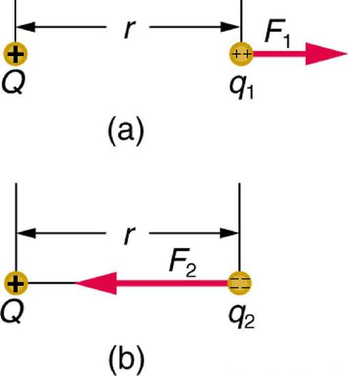
To simplify things, we would prefer to have a field that depends only on \(Q\) and not on the test charge \(q\). The electric field is defined in such a manner that it represents only the charge creating it and is unique at every point in space. Specifically, the electric field \(E\) is defined to be the ratio of the Coulomb force to the test charge:
where \(\mathbf{F}\) is the electrostatic force (or Coulomb force) exerted on a positive test charge \(q\). It is understood that \(\mathbf{E}\) is in the same direction as \(\mathbf{F}\). It is also assumed that \(q\) is so small that it does not alter the charge distribution creating the electric field. The units of electric field are newtons per coulomb (N/C). If the electric field is known, then the electrostatic force on any charge \(q\) is simply obtained by multiplying charge times electric field, or \(\mathbf{F}=q\mathbf{E}\). Consider the electric field due to a point charge \(Q\). According to Coulomb’s law, the force it exerts on a test charge \(q\) is \(F=k|qQ|/r^{2}\). Thus the magnitude of the electric field, \(E\), for a point charge is
Since the test charge cancels, we see that
The electric field is thus seen to depend only on the charge \(Q\) and the distance \(r\); it is completely independent of the test charge\(q\).
Calculate the strength and direction of the electric field \(E\) due to a point charge of 2.00 nC (nano-Coulombs) at a distance of 5.00 mm from the charge.
We can find the electric field created by a point charge by using the equation \(E=kQ/r^{2}\).
Here \(Q=2.00\times 10^{-9}C\) and \(r=5.00\times 10^{-3}m\). Entering those values into the above equation gives
Thiselectric field strengthis the same at any point 5.00 mm away from the charge \(Q\) that creates the field. It is positive, meaning that it has a direction pointing away from the charge \(Q\).
What force does the electric field found in the previous example exert on a point charge of\(-0.250\mu C\)?
Since we know the electric field strength and the charge in the field, the force on that charge can be calculated using the definition of electric field \(\mathbf{E}=\mathbf{F}/q\) rearranged to \(\mathbf{F}=q\mathbf{E}\).
The magnitude of the force on a charge \(q=-.250\mu C\) exerted by a field of strength \(E=7.20\times 10^{5} N/C\) is thus,
Because \(q\) is negative, the force is directed opposite to the direction of the field.
The force is attractive, as expected for unlike charges. (The field was created by a positive charge and here acts on a negative charge.) The charges in this example are typical of common static electricity, and the modest attractive force obtained is similar to forces experienced in static cling and similar situations.
PHET EXPLORATIONS: ELECTRIC FIELD OF DREAMS
Play ball! Add charges to theField of Dreamsand see how they react to the electric field. Turn on a background electric field and adjust the direction and magnitude.

📖 OpenStax College Physics, Section 18.4. openstax.org · CC BY 4.0
- Calculate the total force (magnitude and direction) exerted on a test charge from more than one charge
- Describe an electric field diagram of a positive point charge; of a negative point charge with twice the magnitude of positive charge
- Draw the electric field lines between two points of the same charge; between two points of opposite charge.
Drawings using lines to representelectric fieldsaround charged objects are very useful in visualizing field strength and direction. Since the electric field has both magnitude and direction, it is a vector. Like allvectors, the electric field can be represented by an arrow that has length proportional to its magnitude and that points in the correct direction. (We have used arrows extensively to represent force vectors, for example.)
Figure shows two pictorial representations of the same electric field created by a positive point charge \(Q\). Figure (b) shows the standard representation using continuous lines. Figure (b) shows numerous individual arrows with each arrow representing the force on a test charge \(q\). Field lines are essentially a map of infinitesimal force vectors.
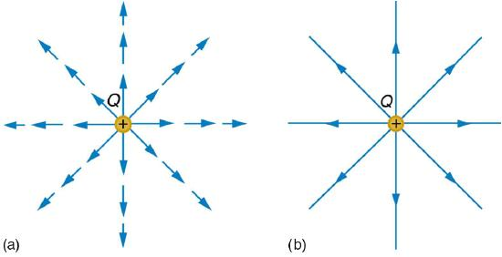
Note that the electric field is defined for a positive test charge \(q\), so that the field lines point away from a positive charge and toward a negative charge. (Figure The electric field strength is exactly proportional to the number of field lines per unit area, since the magnitude of the electric field for a point charge is \(E=k|Q|/r^{2}\) and area is proportional to \(r^{2}\). This pictorial representation, in which field lines represent the direction and their closeness (that is, their areal density or the number of lines crossing a unit area) represents strength, is used for all fields: electrostatic, gravitational, magnetic, and others.
![In part a, electric field lines emanating from a positive charge is shown by the vector arrows in all direction of two dimensional space and the density of these field lines is less. In part b, electric field lines entering the negative charge is shown by the vector arrows coming from all direction of two dimensional space and the density of these field lines is less. In part c, electric field lines entering the negative charge is shown by the vector arrows coming from all direction of two dimensional space and the density of these field lines is large.](images/ch18/fig18-21-in-part-a-electric-field-lines-emanating.jpg)
In many situations, there are multiple charges. The total electric field created by multiple charges is the vector sum of the individual fields created by each charge. The following example shows how to add electric field vectors.
Find the magnitude and direction of the total electric field due to the two point charges, \(q_{1}\) and \(q_{2}\), at the origin of the coordinate system as shown in Figure .
![Two charges are placed on a coordinate axes. Q two is at the position x equals 4 and y equals 0 centimeters. Q one is at the position x equals 0 and y equals two centimeters. Charge on q one is plus five point zero nano coulomb and charge on q two is plus ten nano coulomb. The electric field, E one having a magnitude of one point one three multiplied by ten raise to the power five Newton per coulomb is represented by a vector arrow along positive y axis starting from the origin. The electric field, E two having magnitude zero point five six multiplied by ten raise to the power five Newton per coulomb is represented by a vector arrow along negative x axis starting from the origin. The resultant field makes an angle of sixty three point four degree above the negative y axis having magnitude one point two six multiplied by ten raise to the power five Newton per coulomb is represented by a vector arrow pointing away from the origin in the second quadrant.](images/ch18/fig18-22-two-charges-are-placed-on-a-coordinate-a.jpg)
Since the electric field is a vector (having magnitude and direction), we add electric fields with the same vector techniques used for other types of vectors. We first must find the electric field due to each charge at the point of interest, which is the origin of the coordinate system (O) in this instance. We pretend that there is a positive test charge, \(q\), at point O, which allows us to determine the direction of the fields \(\mathbf{E}_{1}\) and \(\mathbf{E}_{2}\). Once those fields are found, the total field can be determined usingvector addition.
The electric field strength at the origin due to \(q_{1}\) is labeled \(E_{1}\) and is calculated:
Similarly, \(E_{2}\) is
Four digits have been retained in this solution to illustrate that \(E_{1}\) is exactly twice the magnitude of \(E_{2}\). Now arrows are drawn to represent the magnitudes and directions of \(\mathbf{E}_{1}\) and \(\mathbf{E}_{2}\). (Figure The direction of the electric field is that of the force on a positive charge so both arrows point directly away from the positive charges that create them. The arrow for \(\mathbf{E}_{1}\) is exactly twice the length of that for \(\mathbf{E}_{2}\). The arrows form a right triangle in this case and can be added using the Pythagorean theorem. The magnitude of the total field \(E_{tot}\) is
or \(63.4^{\circ}\) above thex-axis.
In cases where the electric field vectors to be added are not perpendicular, vector components or graphical techniques can be used. The total electric field found in this example is the total electric field at only one point in space. To find the total electric field due to these two charges over an entire region, the same technique must be repeated for each point in the region. This impossibly lengthy task (there are an infinite number of points in space) can be avoided by calculating the total field at representative points and using some of the unifying features noted next.
Figure shows how the electric field from two point charges can be drawn by finding the total field at representative points and drawing electric field lines consistent with those points. While the electric fields from multiple charges are more complex than those of single charges, some simple features are easily noticed.
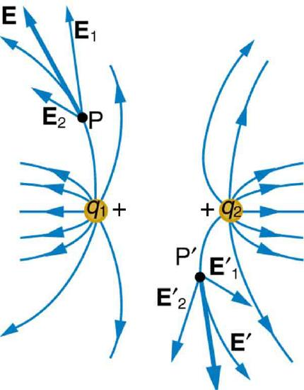
For example, the field is weaker between like charges, as shown by the lines being farther apart in that region. (This is because the fields from each charge exert opposing forces on any charge placed between them.) (See Figure and Figure (a).) Furthermore, at a great distance from two like charges, the field becomes identical to the field from a single, larger charge.
Figure (b) shows the electric field of two unlike charges. The field is stronger between the charges. In that region, the fields from each charge are in the same direction, and so their strengths add. The field of two unlike charges is weak at large distances, because the fields of the individual charges are in opposite directions and so their strengths subtract. At very large distances, the field of two unlike charges looks like that of a smaller single charge.
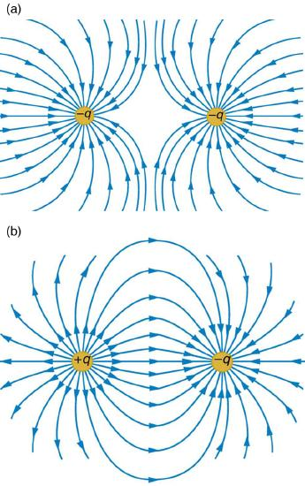
We use electric field lines to visualize and analyze electric fields (the lines are a pictorial tool, not a physical entity in themselves). The properties of electric field lines for any charge distribution can be summarized as follows:
The last property means that the field is unique at any point. The field line represents the direction of the field; so if they crossed, the field would have two directions at that location (an impossibility if the field is unique).
PHET EXPLORATIONS: CHARGES AND FIELDS
Move point charges around on the playing field and then view the electric field, voltages, equipotential lines, and more. It's colorful, it's dynamic, it's free.

📖 OpenStax College Physics, Section 18.5. openstax.org · CC BY 4.0
- Describe how a water molecule is polar.
- Explain electrostatic screening by a water molecule within a living cell.
Classical electrostatics has an important role to play in modern molecular biology. Large molecules such as proteins, nucleic acids, and so on—so important to life—are usually electrically charged. DNA itself is highly charged; it is the electrostatic force that not only holds the molecule together but gives the molecule structure and strength. Figure is a schematic of the DNA double helix.
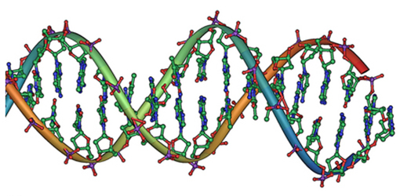
The fournucleotide basesare given the symbols A (adenine), C (cytosine), G (guanine), and T (thymine). The order of the four bases varies in each strand, but the pairing between bases is always the same. C and G are always paired and A and T are always paired, which helps to preserve the order of bases in cell division (mitosis) so as to pass on the correct genetic information. Since the Coulomb force drops with distance (\(F \propto 1/r^{2}\)), the distances between the base pairs must be small enough that the electrostatic force is sufficient to hold them together.
DNA is a highly charged molecule, with about \(2q_e\) (fundamental charge) per \(0.3\times 10^{-9}\)m. The distance separating the two strands that make up the DNA structure is about 1 nm, while the distance separating the individual atoms within each base is about 0.3 nm.
One might wonder why electrostatic forces do not play a larger role in biology than they do if we have so many charged molecules. The reason is that the electrostatic force is “diluted” due toscreeningbetween molecules. This is due to the presence of other charges in the cell.
The best example of this charge screening is the water molecule, represented as \(\mathrm{H_{2}O}\). Water is a stronglypolarmolecule. Its 10 electrons (8 from the oxygen atom and 2 from the two hydrogen atoms) tend to remain closer to the oxygen nucleus than the hydrogen nuclei. This creates two centers of equal and opposite charges—what is called adipole, as illustrated in Figure . The magnitude of the dipole is called the dipole moment.
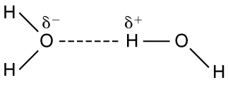
These two centers of charge will terminate some of the electric field lines coming from a free charge, as on a DNA molecule. This results in a reduction in the strength of theCoulomb interaction. One might say that screening makes the Coulomb force a short range force rather than long range. Other ions of importance in biology that can reduce or screen Coulomb interactions are \(\mathrm{Na^{+}}\), and \(\mathrm{K^{+}}\), and \(\mathrm{Cl^{-}}\). These ions are located both inside and outside of living cells. The movement of these ions through cell membranes is crucial to the motion of nerve impulses through nerve axons.
Recent studies of electrostatics in biology seem to show that electric fields in cells can be extended over larger distances, in spite of screening, by “microtubules” within the cell. Thesemicrotubulesare hollow tubes composed of proteins that guide the movement of chromosomes when cells divide, the motion of other organisms within the cell, and provide mechanisms for motion of some cells (as motors).
📖 OpenStax College Physics, Section 18.6. openstax.org · CC BY 4.0
- List the three properties of a conductor in electrostatic equilibrium.
- Explain the effect of an electric field on free charges in a conductor.
- Explain why no electric field may exist inside a conductor.
- Describe the electric field surrounding Earth.
- Explain what happens to an electric field applied to an irregular conductor.
- Describe how a lightning rod works.
- Explain how a metal car may protect passengers inside from the dangerous electric fields caused by a downed line touching the car.
Conductorscontainfree chargesthat move easily. When excess charge is placed on a conductor or the conductor is put into a static electric field, charges in the conductor quickly respond to reach a steady state calledelectrostatic equilibrium.
Figure shows the effect of an electric field on free charges in a conductor. The free charges move until the field is perpendicular to the conductor’s surface. There can be no component of the field parallel to the surface in electrostatic equilibrium, since, if there were, it would produce further movement of charge. A positive free charge is shown, but free charges can be either positive or negative and are, in fact, negative in metals. The motion of a positive charge is equivalent to the motion of a negative charge in the opposite direction.
![In part a, an electric field E exists at some angle with the horizontal applied on a conductor. One component of this field E parallel is along x axis represented by a vector arrow and other E perpendicular, is along y axis represented by a vector arrow. Charge inside the conductor moves along x axis so the force acting on it is F parallel, which is equal to q multiplied by E parallel. In part b, a charge is shown inside the conductor and electric field is represented by a vector arrow pointing upward starting from the surface of the conductor.](images/ch18/fig18-28-in-part-a-an-electric-field-e-exists-at-.jpg)
A conductor placed in anelectric fieldwill bepolarized. Figure shows the result of placing a neutral conductor in an originally uniform electric field. The field becomes stronger near the conductor but entirely disappears inside it.
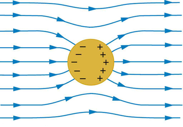
MISCONCEPTION ALERT: ELECTRIC FIELD INSIDE A CONDUCTOR
Excess charges placed on a spherical conductor repel and move until they are evenly distributed, as shown in Figure . Excess charge is forced to the surface until the field inside the conductor is zero. Outside the conductor, the field is exactly the same as if the conductor were replaced by a point charge at its center equal to the excess charge.
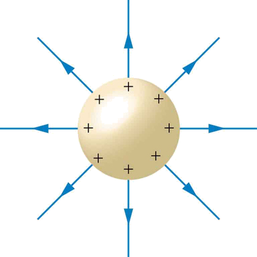
PROPERTIES OF A CONDUCTOR IN ELECTROSTATIC EQUILIBRIUM
The properties of a conductor are consistent with the situations already discussed and can be used to analyze any conductor in electrostatic equilibrium. This can lead to some interesting new insights, such as described below.
How can a very uniform electric field be created? Consider a system of two metal plates with opposite charges on them, as shown in Figure . The properties of conductors in electrostatic equilibrium indicate that the electric field between the plates will be uniform in strength and direction. Except near the edges, the excess charges distribute themselves uniformly, producing field lines that are uniformly spaced (hence uniform in strength) and perpendicular to the surfaces (hence uniform in direction, since the plates are flat). The edge effects are less important when the plates are close together.
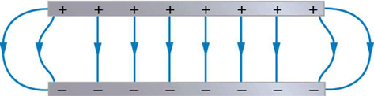
A near uniform electric field of approximately 150 N/C, directed downward, surrounds Earth, with the magnitude increasing slightly as we get closer to the surface. What causes the electric field? At around 100 km above the surface of Earth we have a layer of charged particles, called theionosphere. The ionosphere is responsible for a range of phenomena including the electric field surrounding Earth. In fair weather the ionosphere is positive and the Earth largely negative, maintaining the electric field (Figure \(\PageIndex{5a}\)).
In storm conditions clouds form and localized electric fields can be larger and reversed in direction (Figure \(\PageIndex{5b}\)). The exact charge distributions depend on the local conditions, and variations of Figure \(\PageIndex{5b}\) are possible.
If the electric field is sufficiently large, the insulating properties of the surrounding material break down and it becomes conducting. For air this occurs at around \(3\times 10^{6}\) N/C. Air ionizes ions and electrons recombine, and we get discharge in the form of lightning sparks and corona discharge.
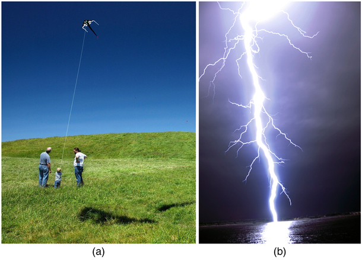
So far we have considered excess charges on a smooth, symmetrical conductor surface. What happens if a conductor has sharp corners or is pointed? Excess charges on a nonuniform conductor become concentrated at the sharpest points. Additionally, excess charge may move on or off the conductor at the sharpest points.
To see how and why this happens, consider the charged conductor in Figure . The electrostatic repulsion of like charges is most effective in moving them apart on the flattest surface, and so they become least concentrated there. This is because the forces between identical pairs of charges at either end of the conductor are identical, but the components of the forces parallel to the surfaces are different. The component parallel to the surface is greatest on the flattest surface and, hence, more effective in moving the charge.
The same effect is produced on a conductor by an externally applied electric field, as seen in Figure \(\PageIndex{6c}\). Since the field lines must be perpendicular to the surface, more of them are concentrated on the most curved parts.
![In part a, a conductor is shown with the unsymmetrical shape. The identical pair of charges at opposite ends on the conductor have similar components of forces represented by arrows. In part b, the unsymmetrical object has positive charge on its surface. The electric field lines are shown emerging perpendicular from the surface of the conductor represented by vector arrow. In part c, the field lines in and around the conductor running from left to right is shown. The left surface of the conductor has negative charge and the right surface has positive charge. The field lines enter and leave the conductor at right angles.](images/ch18/fig18-33-in-part-a-a-conductor-is-shown-with-the-.jpg)
On a very sharply curved surface, such as shown in Figure , the charges are so concentrated at the point that the resulting electric field can be great enough to remove them from the surface. This can be useful.
Lightning rods work best when they are most pointed. The large charges created in storm clouds induce an opposite charge on a building that can result in a lightning bolt hitting the building. The induced charge is bled away continually by a lightning rod, preventing the more dramatic lightning strike.
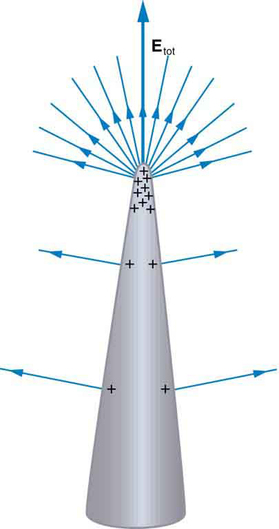
Of course, we sometimes wish to prevent the transfer of charge rather than to facilitate it. In that case, the conductor should be very smooth and have as large a radius of curvature as possible. (Figure Smooth surfaces are used on high-voltage transmission lines, for example, to avoid leakage of charge into the air.
Another device that makes use of some of these principles is aFaraday cage. This is a metal shield that encloses a volume. All electrical charges will reside on the outside surface of this shield, and there will be no electrical field inside. A Faraday cage is used to prohibit stray electrical fields in the environment from interfering with sensitive measurements, such as the electrical signals inside a nerve cell.
During electrical storms if you are driving a car, it is best to stay inside the car as its metal body acts as a Faraday cage with zero electrical field inside. If in the vicinity of a lightning strike, its effect is felt on the outside of the car and the inside is unaffected, provided you remain totally inside. This is also true if an active (“hot”) electrical wire was broken (in a storm or an accident) and fell on your car.
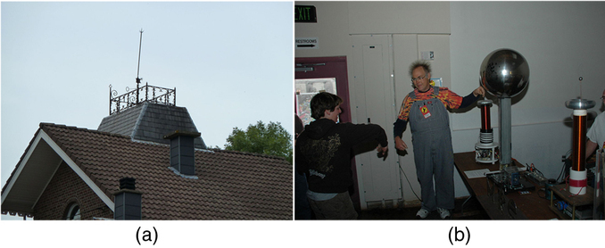
📖 OpenStax College Physics, Section 18.7. openstax.org · CC BY 4.0
- Name several real-world applications of the study of electrostatics.
The study ofelectrostaticshas proven useful in many areas. This module covers just a few of the many applications of electrostatics.
Van de Graaff generators(or Van de Graaffs) are not only spectacular devices used to demonstrate high voltage due to static electricity—they are also used for serious research. The first was built by Robert Van de Graaff in 1931 (based on original suggestions by Lord Kelvin) for use in nuclear physics research. Figure shows a schematic of a large research version. Van de Graaffs utilize both smooth and pointed surfaces, and conductors and insulators to generate large static charges and, hence, large voltages.
A very large excess charge can be deposited on the sphere, because it moves quickly to the outer surface. Practical limits arise because the large electric fields polarize and eventually ionize surrounding materials, creating free charges that neutralize excess charge or allow it to escape. Nevertheless, voltages of 15 million volts are well within practical limits.
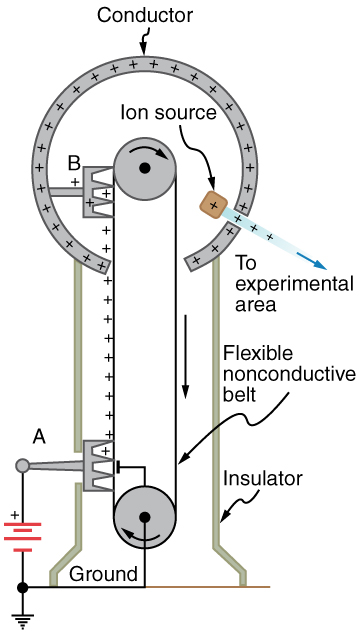
TAKE-HOME EXPERIMENT: ELECTROSTATICS AND HUMIDITY
Rub a comb through your hair and use it to lift pieces of paper. It may help to tear the pieces of paper rather than cut them neatly. Repeat the exercise in your bathroom after you have had a long shower and the air in the bathroom is moist. Is it easier to get electrostatic effects in dry or moist air? Why would torn paper be more attractive to the comb than cut paper? Explain your observations.
Most copy machines use an electrostatic process calledxerography—a word coined from the Greek wordsxerosfor dry andgraphosfor writing. The heart of the process is shown in simplified form in Figure . A selenium-coated aluminum drum is sprayed with positive charge from points on a device called a corotron. Selenium is a substance with an interesting property—it is a photoconductor. That is, selenium is an insulator when in the dark and a conductor when exposed to light.
In the first stage of the xerography process, the conducting aluminum drum is grounded so that a negative charge is induced under the thin layer of uniformly positively charged selenium. In the second stage, the surface of the drum is exposed to the image of whatever is to be copied. Where the image is light, the selenium becomes conducting, and the positive charge is neutralized. In dark areas, the positive charge remains, and so the image has been transferred to the drum.
The third stage takes a dry black powder, called toner, and sprays it with a negative charge so that it will be attracted to the positive regions of the drum. Next, a blank piece of paper is given a greater positive charge than on the drum so that it will pull the toner from the drum. Finally, the paper and electrostatically held toner are passed through heated pressure rollers, which melt and permanently adhere the toner within the fibers of the paper.
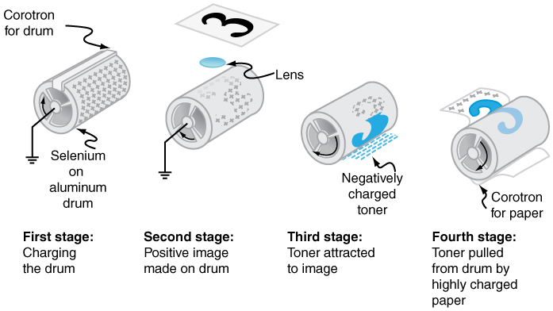
Laser printersuse the xerographic process to make high-quality images on paper, employing a laser to produce an image on the photoconducting drum as shown in Figure . In its most common application, the laser printer receives output from a computer, and it can achieve high-quality output because of the precision with which laser light can be controlled. Many laser printers do significant information processing, such as making sophisticated letters or fonts, and may contain a computer more powerful than the one giving them the raw data to be printed.
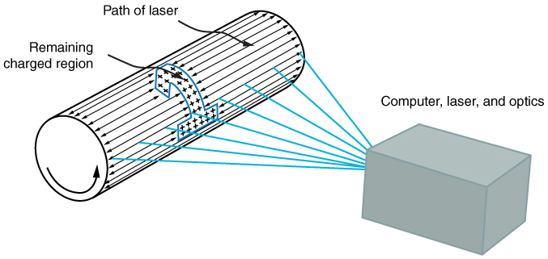
Theink jet printer, commonly used to print computer-generated text and graphics, also employs electrostatics. A nozzle makes a fine spray of tiny ink droplets, which are then given an electrostatic charge (Figure . Once charged, the droplets can be directed, using pairs of charged plates, with great precision to form letters and images on paper. Ink jet printers can produce color images by using a black jet and three other jets with primary colors, usually cyan, magenta, and yellow, much as a color television produces color (this is more difficult with xerography, requiring multiple drums and toners).
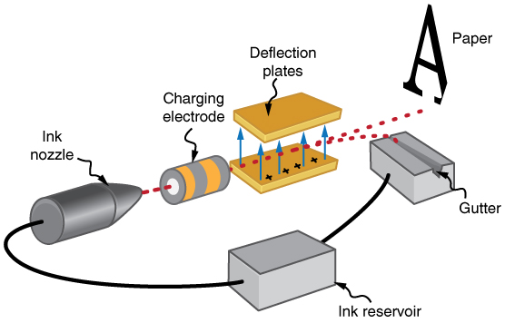
Electrostatic painting employs electrostatic charge to spray paint onto odd-shaped surfaces. Mutual repulsion of like charges causes the paint to fly away from its source. Surface tension forms drops, which are then attracted by unlike charges to the surface to be painted. Electrostatic painting can reach those hard-to-get at places, applying an even coat in a controlled manner. If the object is a conductor, the electric field is perpendicular to the surface, tending to bring the drops in perpendicularly. Corners and points on conductors will receive extra paint. Felt can similarly be applied.
Another important application of electrostatics is found in air cleaners, both large and small. The electrostatic part of the process places excess (usually positive) charge on smoke, dust, pollen, and other particles in the air and then passes the air through an oppositely charged grid that attracts and retains the charged particles (Figure . Largeelectrostatic precipitatorsare used industrially to remove over 99% of the particles from stack gas emissions associated with the burning of coal and oil. Home precipitators, often in conjunction with the home heating and air conditioning system, are very effective in removing polluting particles, irritants, and allergens.
![(a) Schematic of an electrostatic precipitator. Air is passed through grids of opposite charge. The first grid charges airborne particles, while the second attracts and collects them. (b) The dramatic effect of electrostatic precipitators is seen by the absence of smoke from this power plant.[alt]Schematic of an electrostatic precipitator is shown. Four filters are shown one after another. Air passes through initial filter, then through positively charged grid, then through the third grid which is negatively charged and finally through the final grid. The number of particles is shown decreasing as air passes through various filters.](images/ch18/fig18-40-a-schematic-of-an-electrostatic-precipit.jpg)
PROBLEM-SOLVING STRATEGIES FOR ELECTROSTATICS
The following worked example illustrates how this strategy is applied:
If steps are not taken to ground a gasoline pump, static electricity can be placed on gasoline when filling your car’s tank. Suppose a tiny drop of gasoline has a mass of \(4.00\times 10^{-15}kg\) and is given a positive charge of \(3.20\times 10^{-19}C\). (a) Find the weight of the drop. (b) Calculate the electric force on the drop if there is an upward electric field of strength \(3.00\times 10^{5} N/C\) due to other static electricity in the vicinity. (c) Calculate the drop’s acceleration.
To solve an integrated concept problem, we must first identify the physical principles involved and identify the chapters in which they are found.
The following solutions to each part of the example illustrate how the specific problem-solving strategies are applied. These involve identifying knowns and unknowns, checking to see if the answer is reasonable, and so on.
Weight is mass times the acceleration due to gravity, as first expressed in
Entering the given mass and the average acceleration due to gravity yields
This is a small weight, consistent with the small mass of the drop.
The force an electric field exerts on a charge is given by rearranging the following equation:
Here we are given the charge (\(3.20\times 10^{-19}C\) is twice the fundamental unit of charge) and the electric field strength, and so the electric force is found to be
While this is a small force, it is greater than the weight of the drop.
The acceleration can be found using Newton’s second law, provided we can identify all of the external forces acting on the drop. We assume only the drop’s weight and the electric force are significant. Since the drop has a positive charge and the electric field is given to be upward, the electric force is upward. We thus have a one-dimensional (vertical direction) problem, and we can state Newton’s second law as
where \(F_{net}=F-w\). Entering this and the known values into the expression for Newton’s second law yields
This is an upward acceleration great enough to carry the drop to places where you might not wish to have gasoline.
This worked example illustrates how to apply problem-solving strategies to situations that include topics in different chapters. The first step is to identify the physical principles involved in the problem. The second step is to solve for the unknown using familiar problem-solving strategies. These are found throughout the text, and many worked examples show how to use them for single topics. In this integrated concepts example, you can see how to apply them across several topics. You will find these techniques useful in applications of physics outside a physics course, such as in your profession, in other science disciplines, and in everyday life. The following problems will build your skills in the broad application of physical principles.
The Unreasonable Results exercises for this module have results that are unreasonable because some premise is unreasonable or because certain of the premises are inconsistent with one another. Physical principles applied correctly then produce unreasonable results. The purpose of these problems is to give practice in assessing whether nature is being accurately described, and if it is not to trace the source of difficulty.
PROBLEM-SOLVING STRATEGY
To determine if an answer is reasonable, and to determine the cause if it is not, do the following.
📖 OpenStax College Physics, Section 18.8. openstax.org · CC BY 4.0
| Section | Title |
|---|---|
| 18.0 | 18.0: Prelude to Electric Charge and Electric Field |
| 18.1 | 18.1: Static Electricity and Charge - Conservation of Charge |
| 18.2 | 18.2: Conductors and Insulators |
| 18.3 | 18.3: Coulomb's Law |
| 18.4 | 18.4: Electric Field- Concept of a Field Revisited |
| 18.5 | 18.5: Electric Field Lines- Multiple Charges |
| 18.6 | 18.6: Electric Forces in Biology |
| 18.7 | 18.7: Conductors and Electric Fields in Static Equilibrium |
| 18.8 | 18.8: Applications of Electrostatics |